films
| 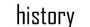 |
feature films
Films listed in order of release.
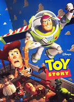Toy Story (1995)
Toy Story marked the beginning of a new era of moviemaking. Pixar's first animated movie was also the first ever completely computer generated feature length film. Toy Story follows toys who come to life when Andy, their owner, is away. Andy's favorite toy, Woody, is jealous of Buzz, a new toy competing for attention. Throughout the movie Woody tries to keep his position as favorite toy, resulting in an adventure with the mean neighbor Sid, mutant toys, and a race to get home before Andy moves to a new house. The animated short Tin Toy was released with Toy Story.
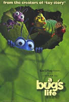A Bug's Life (1998)
Following Pixar's success with Toy Story, A Bug's Life was released shortly after Antz as the third CGI movie ever made. A Bug's Life is the story of an ant inventor named Flick who hires circus bugs to defend his colony from grasshoppers, mistaking them for warriors. The film puts in perspective the size of plants and animals as well as the catastrophic effect of the elements from the view of ants. A Bug's Life also marked Pixar's first film with a full non-human cast. As an additional feature, A Bug's Life included animated bloopers in the credits, creating irony as the film was animated and would not normally have mistakes made by actors captured on camera. A Bug's Life was released with Geri's Game.
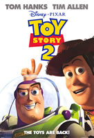Toy Story 2 (1999)
Because of the first Toy Story's success, Pixar released its first sequel to even greater reception. While Woody and Buzz are able to get along, Woody is taken by the greedy toy collector Al to be put on display in a museum. Buzz and some of Andy's other toys put together a team and organize a rescue mission to bring Woody home. Along the way, the toys meet new friends and infiltrate Al's office in order to find their friend. Toy Story 2 kept Pixar's tradition of releasing trailers with content not in the film. This movie was also released on VHS with Pixar's first short film, Luxo Jr.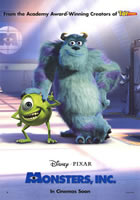
Monsters, Inc. (2001)
With a budget surpassing all previous and the next three films that Pixar would make, Monsters, Inc. was nevertheless still very profitable. This film is the second that Pixar has made with a planned sequel. Monsters, Inc. tells the story of Sully, a valuable employee to a monster company that produces energy from scaring children by utilizing a system of door portals. Humans are considered toxic, with a single touch able to kill a monster. Panic ensues after Sully and his assistant Mike let a little girl escape into the monster world. Both must quickly smuggle the human back to her own bedroom before they are caught. Monsters, Inc. was released with For the Birds and Mike's New Car.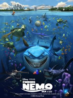
Finding Nemo (2003)
Pixar's second film on the American Film Institute's Animated 10 Top 10 list is also the latest. Finding Nemo is the highest grossing G-rated movie of all time. This film's story tells of a overprotective clownfish named Marlin who has lost his only son Nemo to human divers in the reef. He travels across the ocean to find his son with Dory, a regal tang he meets on the way. Marlin's adventures bring him to confront sharks, angler fish, jellyfish, and a whale, while his son tries to escape from a fish tank in his captor's dental office. Knick Knack was released with Finding Nemo.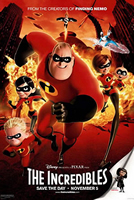
The Incredibles (2004)
Pixar released its first superhero action movie The Incredibles as the first to star a human as well. Originally drafted as a cel animation feature for Warner Bros., the film was transferred to Pixar after the former studio shut down. Mr. Incredible and his family fight against a vengeful former fan who tries to convince the world that he is a "super" and belittle the natural powers given to real superheros. Mr. Incredible must use the talents of his friends and family to combat a threat large enough to devastate an entire city. The Incredibles was released with Boundin' and Jack-Jack Attack.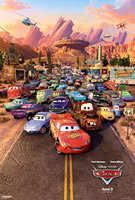
Cars (2006)
As the final film Pixar made before it's aquisition by Disney, Cars is also one of the longest. Cars broke the previous records for merchandising set by previous movies as well. This film is Pixar's second to have a sequel, planned for release in 2011. Cars is the story of an overconfident racing car Lightning McQueen ready to take on two other champions in a tie breaker race on the other side of the country. On the way there, he loses his transport truck and gets stuck in Radiator Springs, a small, humble town. Lightning must repair the road he ruined and get to the race track as soon as possible. Cars was released with One Man Band and Mater and the Ghostlight.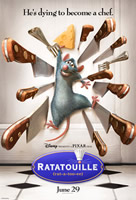
Ratatouille (2007)
As Pixar's first movie under Disney, Ratatouille kept the high standards of previous films. Remy, a rat who gets separated from his clan in an escape from their previously discovered home, finds he can accomplish his dream of becoming a chef when he finds a gourmet restaurant in the middle of Paris. Featuring a suble element of magic, Ratatouille used several effects to make food appealing such as lighting, texture, and color. Lifted and Pixar's first semi-2D film Your Friend the Rat both accompanied Ratatouille.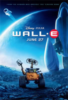
WALL-E (2008)
WALL-E broke a Pixar tradition of depending on only CGI animation by including several instances of live footage, the first of their films ever to do so. WALL-E takes a humorous perspective of environmentalism by showing a future Earth filled with trash and a distant ship with the human population all grossly obese. WALL-E is a cleanup robot who has worked on Earth for several hundred years before meeting EVE, a scout robot from the current human ship, the Axiom. After the humans have left for so long, Earth may be ready for repopulation, and WALL-E needs to help EVE to spread the word before they are overpowered by the Axiom's computer, Auto. WALL-E was released with BURN-E and Presto.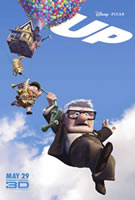
Up (2009)
Possibly Pixar's most realistic film, Up nevertheless contains humorous creatures, technology, and transportation. Using thousands of inflatable party balloons, Carl Frederickson finally travels to the location of his lifelong dream, Paradise Falls. However, he brings along and meets unexpected guests that require time, patience, and protection possibly more than Carl can provide in his old age. Up was released with Partly Cloudy and Dug's Special Mission.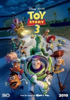
Toy Story 3 (2010 - not yet released)
Hitting theaters on June 18, Pixar's latest film is the second to be presented in 3D and the only 3rd installment of a series. Toy Story 3 follows the problems that arise for Woody, Buzz, and the rest of the toys after Andy goes to college. Toy Story 3 is likely to be the most dynamic movie in the series yet, as new toys are introduced and Woody travels to find Andy. Toy Story 3 is being released with Day & Night, Pixar's first all 2D film.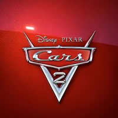
Cars 2 (2011 - in production)
Pixar's next installment will be Cars 2. In this sequel, Lightning McQueen, Mater, and his pit crew will travel around the world to compete in a multi-country five part race. However, Mater becomes involved in British espionage after saving the life of agent Finn Mc Missile.
short films
Films listed in order of release.
The Adventures of André and Wally B. (1984)
Pixar's first ever short film was technically made under Lucasfilm. John Lasseter authored the film for his son. The short was groundbreaking in the animating world because it was the first to use motion blur and advanced lighting effects. In the film, André tries to escape a Wally B., an annoying bee. This short was one of only two never to be released with a Pixar feature film.
Luxo Jr. (1986)
Quite possibly Pixar's most famous short, Luxo Jr. demonstrated to the moviemaking world what Pixar was capable of in animation. This film inspired Pixar's animated logo, featuring the same troublemaking lamp as in the short. Luxo Jr. was re-released with Toy Story 2.
Red's Dream (1987)
The second of only two shorts never to be released with a film, Red's Dream was the only film ever rendered on the Pixar Imaging Computer. The short told the story of a discounted unicycle in Eben's Bikes dreaming of perfoming in a circus, but is awakened to reality when it realizes it still has not sold. The film plot was formed from combined ideas of the design team.
Tin Toy (1988)
Largely reminscient of Toy Story (the feature film it was later released with), Tin Toy was the inspiration and precursor for Pixar's fully animated features. In the film, Tinny, a one mand band toy, comes to life. He escapes a baby trying to play with him and hides with other toys fearing misuse. Tin Toy initially had a sequel planned to prove Pixar's ability to create full length feature films, but Disney urged Pixar to go straight into Toy Story's development.
Knick Knack (1989)
Knick Knack, the last of Pixar's initial short films, was directed by John Lasseter and won the Best Short Film award at the Seattle National Film Festival in 1990. In the film, a snowman trapped in a snowglobe tries to escape to "Sunny Miami" paradise using any means possible, including a jackhammer and explosives. Despite his continued failure, the snowman never gives up and moves on to the next humorous attempt to get out. Knick Knack was released with Finding Nemo.
Geri's Game (1997)
Geri's Game is the first Pixar short to feature a character who appears in a full length film. Geri, the main character in the short, appears in Toy Story 2 as Woody's repairman. In the short, Geri sets up a chess board, but plays against himself when he realizes no one is with him. Geri's Game accompanies A Bug's Life.
For the Birds (2000)
Winning over six awards, For the Birds continues to show Pixar's moviemaking talent. In the film, a bunch of smaller birds bicker over a spot on a telephone wire when a much larger, funny looking bird honks at them. The smaller birds try to get away from the large bird who follows them around. Eventually the rivalry ends in a humorous situation caused by the smaller birds dislike. For the Birds was released with Monsters, Inc.
Mike's New Car (2002)
Mike Wazowski from Monsters, Inc. returns in this short, the second Pixar ever made with characters from a feature film and the first that correlates with the feature. In this film, Mike tries to ride his new 6 wheel drive car to work with Sulley. However, the car malfunctions and Sulley convinces Mike to walk to work.
Boundin' (2003)
Written, directed, narrated, and scored by one person, Boundin' is considered by Pixar to be Bud Luckey's film. This short tells the story of a sheep saddened by the loss of his coat, but upon meeting a Jackalope regains his confidence. This is the only short film by Pixar to feature voiced characters not starring in a feature film. Boundin' was released with The Incredibles.
Jack-Jack Attack (2005)
Continuing a new Pixar tradition of releasing shorts that follow with a feature, Jack-Jack Attack is an expanded and finished deleted scene that was originally meant to be implemented in the feature. This short shows how Jack-Jack from The Incredibles discovers his powers. Kari, the his babysitter, plays classical music for him, causing Jack-Jack to float, travel through walls, burst into flames, and shoot lasers from his eyes, much to her horrer.
One Man Band (2005)
One Man Band shows how two competing street performers outdo each other to win the single gold coin a small girl has to offer for their music. This film features an elaborate display of talent and inventiveness of the two musicians as they replicate the sounds of an entire orchestra. One Man Band was released with Cars.
Mater and the Ghostlight (2006)
In this film, Mater from Cars pulls several pranks on his friends in Radiator Springs. As retribution, Lightning McQueen and Guido pull their own prank on Mater as he goes to his garage for the night.
Lifted (2006)
Lifted, the story of a failing alien student learning how to abduct humans, was inspired in part by Pixar's audio department. The controls on the space ship for beaming up victims had no labels or markings, parodying the complex controls on audio equipment. Lifted shows what really goes on before fully fledged abductions can take place. Lifted was released with Ratatouille.
Your Friend the Rat (2007)
Pixar's first semi-2D animation was a mock history of rats given by Remy from Ratatouille. He and his brother talk and sing to an animated cover with details from a rat's perspective of the Black Plague and rat population. The closing song features a cameo of WALL-E driving a spaceship.
Presto (2008)
Presto is the story of a magician who owns a set of hats that are linked by a portal. His act involves a rabbit who is more interested in eating dinner than cooperating by wearing the hat so the magician can pull him out. A hilarious sequence follows as the rabbit constantly outwits the magician using the portal between the hats. Presto was released with WALL-E.
BURN-E (2008)
BURN-E is a welder robot working on the Axiom from WALL-E. Due to a malfunction of a light post, he is sent to fix it and continually fixes it as it breaks over and over. BURN-E correlates with the movie as WALL-E, EVE, or other characters are responsible for BURN-E's endless mission.
Partly Cloudy (2009)
Partly Cloudy elaborates on how storks deliver babies to their families. Clouds have the power to create animals that storks can deliver. However, while some clouds create kittens, puppies, and chicks, one cloud makes baby alligators, electric eels, rams, and other dangerous creatures, much to the chagrin of his weathered stork. Partly Cloudy was released with Up.
Dug's Special Mission (2009)
This short follows what happens to Dug from Up before he meets Russel and Carl. He is assigned "missions" by the Alpha dog so he will not ruin the pack's plans to capture wild birds. However, through unfortunate circumstances, Dug always seems to ruin the real mission led by Alpha.
Day & Night (2010)
Pixar's second 2D film is planned for release with Toy Story 3 on June 18, 2010. This film shows how cartoon personalities of both Day and Night interact, as when they first meet they do not trust each other.
Copyright © 2010